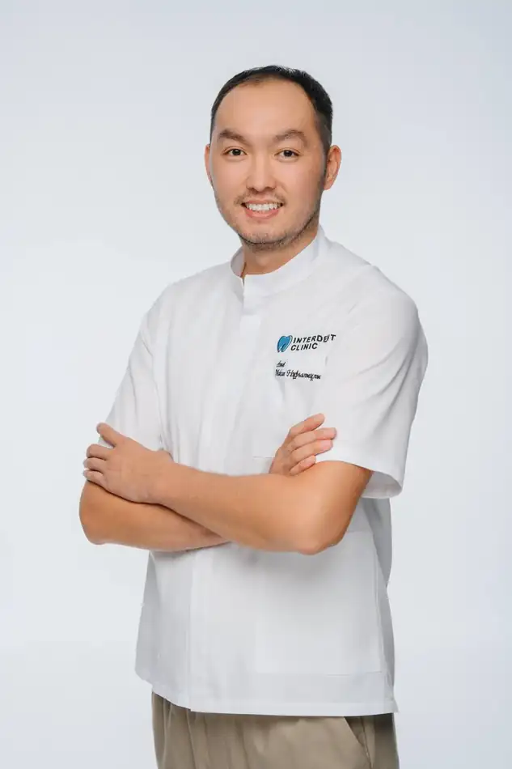
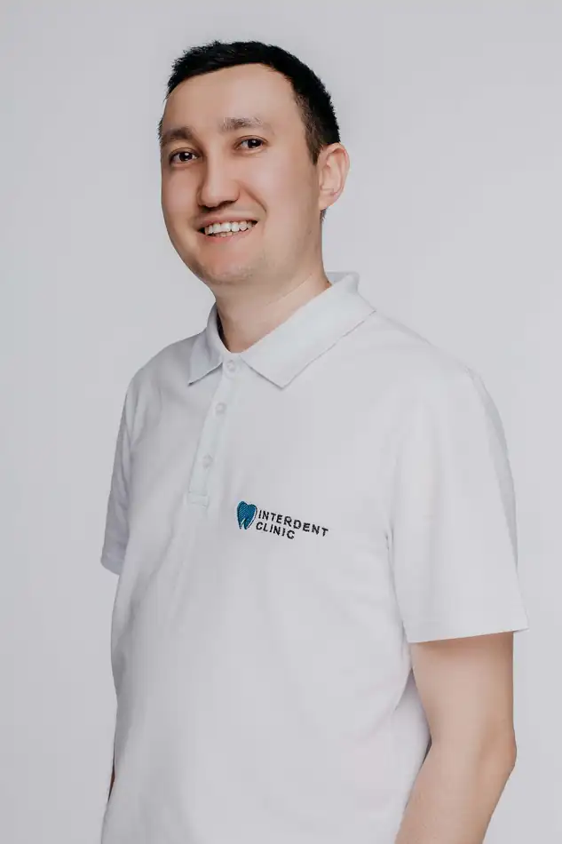
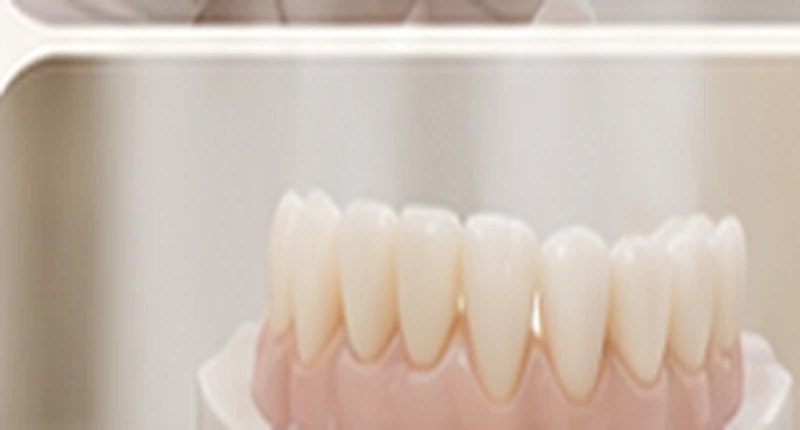

Точная диагностика
3D-диагностика помогает врачу спланировать количество и положение имплантов.
Восстановление зубного ряда · Астана
Новая улыбка на 4 или 6 имплантах. Восстановление всех зубов на верхней или нижней челюсти.

Система восстановления
All-on-4 и All-on-6 — это восстановление всех зубов на верхней или нижней челюсти с опорой на 4 или 6 имплантов. Количество имплантов определяет врач по результатам осмотра и 3D-диагностики.
Сначала устанавливаются импланты и мультиюниты, затем изготавливается временный протез, а после — постоянный. Постоянный протез может быть пластмассовым, металлокерамическим или циркониевым.
Подход клиники
3D-диагностика помогает врачу спланировать количество и положение имплантов.
Установку имплантов и протезирование по системе All-on-4 и All-on-6 проводят врачи клиники.
Заключаем договор. Гарантию на имплант обеспечивает производитель.
Рассрочка Kaspi 0-0-24 на имплантацию.
Хирургический этап и протезирование
Итоговую стоимость рассчитывает врач после консультации. При оплате наличными действует дополнительная скидка.
Путь пациента
Осмотр, 3D-диагностика, консультация имплантолога.
Врач определяет количество имплантов (4 или 6) и материал постоянного протеза, рассчитывает стоимость.
Установка имплантов и мультиюнитов.
Устанавливается на время приживления имплантов.
Изготавливается ортопедом.
Сроки каждого этапа врач определяет индивидуально после диагностики.
Команда Interdent Clinic

Врач-стоматолог, хирург
Опыт: с 2015 года
Врач-стоматолог-ортопед
Опыт: более 10 лет
Условия лечения
Заключаем договор. Гарантию на имплант обеспечивает производитель.
Оплатите имплантацию в рассрочку через Kaspi 0-0-24.
Размер скидки и итоговую стоимость рассчитывает имплантолог на консультации.
Ответы до консультации
Врач проведёт осмотр, подберёт вариант лечения и рассчитает стоимость.
Ждём вас
